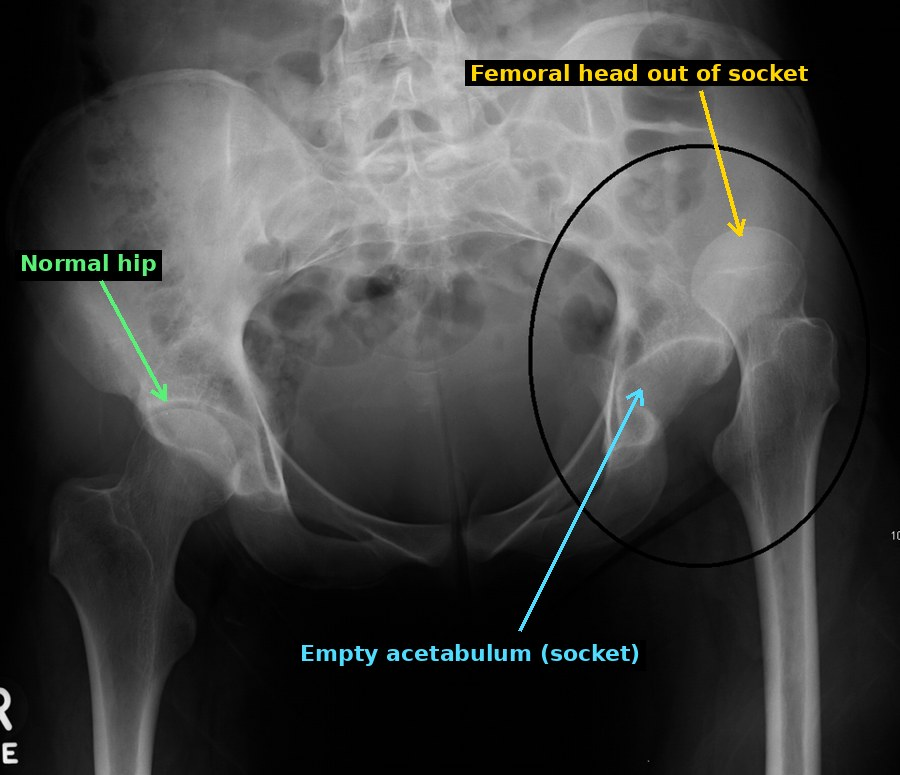
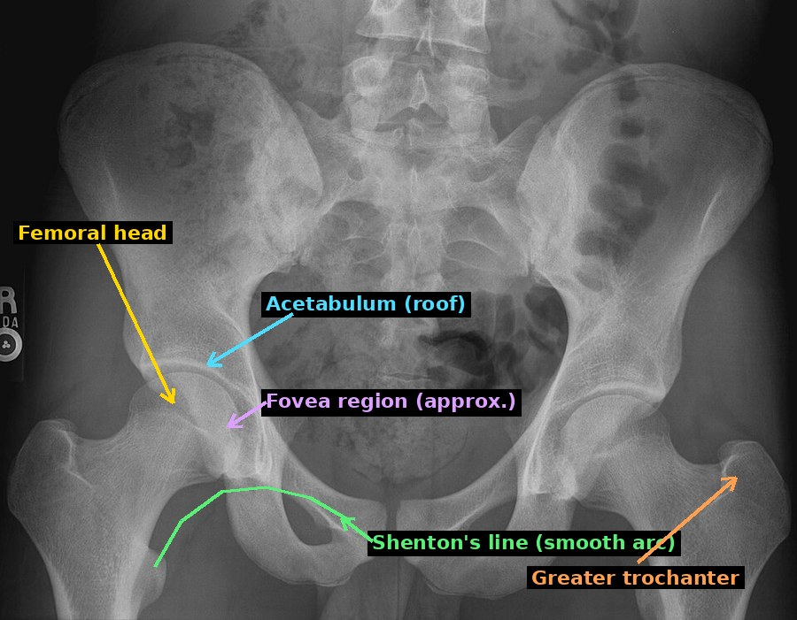
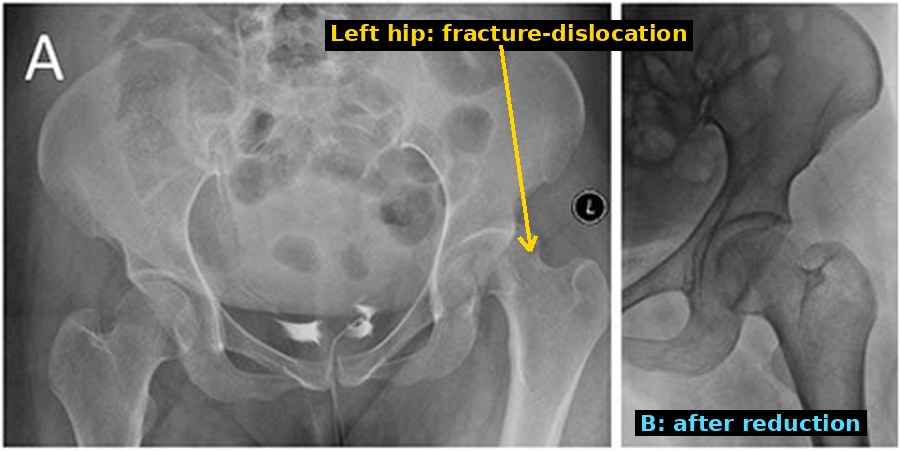
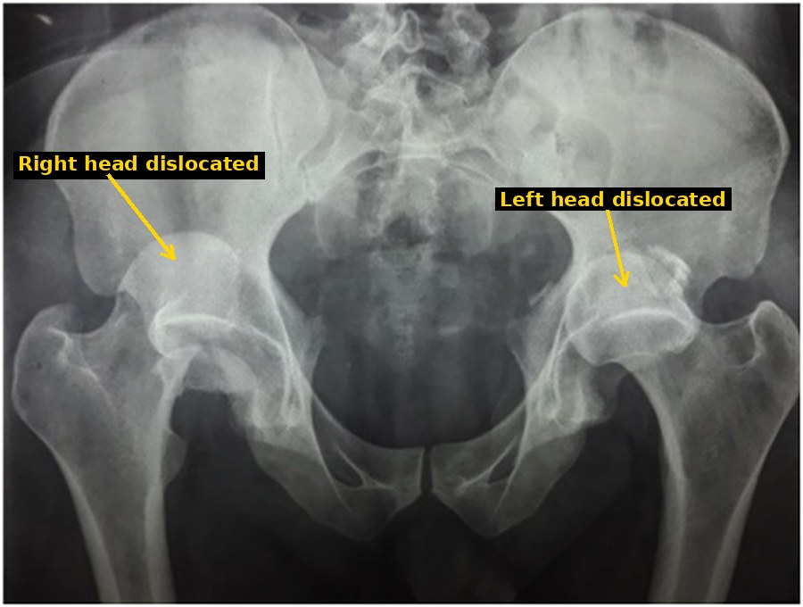
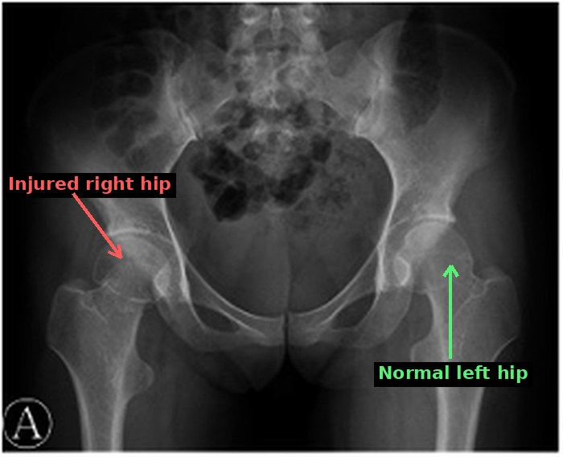
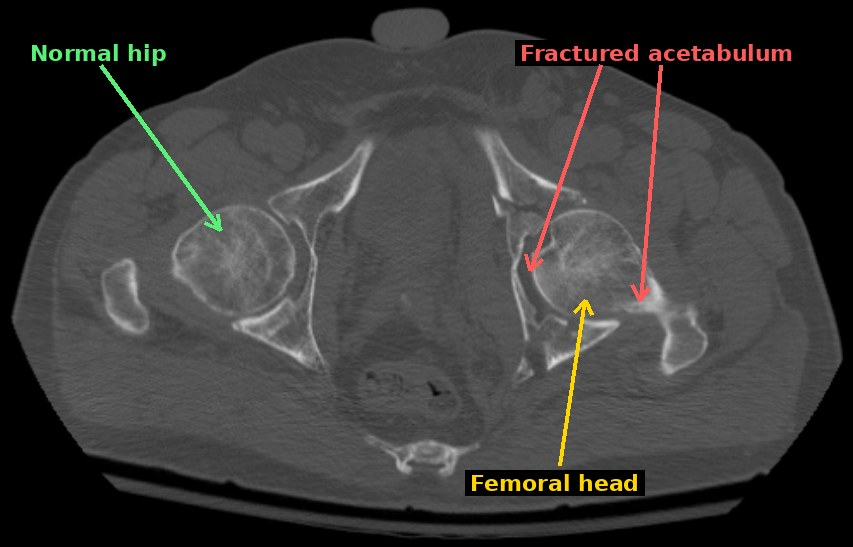
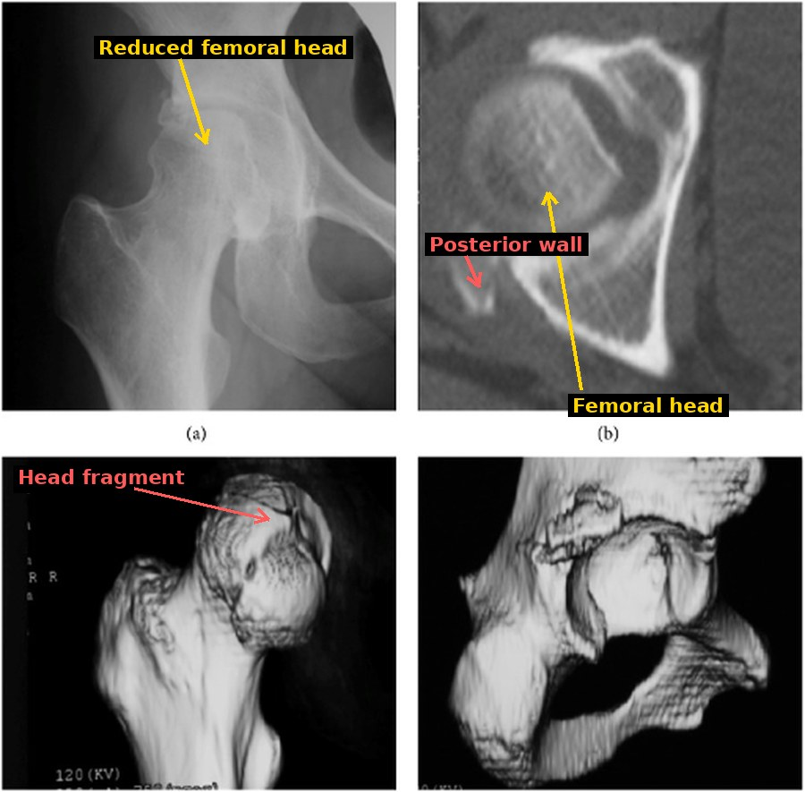

Pipkin classification of femoral head fractures, a guided walkthrough
Step 1 · The patient
Step 2 · How it happens: the dashboard injury
- The knee hits the dashboard while hip and knee are bent.
- The force runs up the thigh bone and pushes the femoral head backward out of the socket (posterior dislocation).
- On its way out, the head scrapes over the back rim of the socket. The rim can shear off a piece of the head (femoral head fracture), break off a piece of the acetabulum (the socket), or both.
- The sciatic nerve runs directly behind the hip, so a head pushed out backward can stretch or compress it.

dislocated hip after trauma; the femoral head sits above and outside its socket. The uploader describes it as a superior dislocation. No femoral head fracture is visible or claimed here; it shows only what "out of the socket" looks like.">
Step 3 · The landmarks Pipkin uses
Fovea capitis: a small pit on the inner (medial) surface of the femoral head. The ligamentum teres (ligament of the head of the femur) attaches here and connects the head to the bottom of the socket.
Weight-bearing zone: the top part of the head that presses against the roof of the socket when you stand. Damage here is more serious for the joint surface.
Pipkin asks one simple question first: is the fracture line below or above the fovea?
- Below (infrafoveal): the broken piece is the lower inner part; it does not carry body weight.
- Above (suprafoveal): the line runs above the pit, so the piece includes part of the weight-bearing zone, and the ligamentum teres stays attached to the piece.
Then it asks: is there also a femoral neck fracture (type III) or an acetabular fracture (type IV)?

normal adult pelvis (AP). Labelled on the right hip: femoral head, acetabular roof, the approximate fovea region (the pit is often hard to see on plain film), Shenton's line as a smooth arc, and a greater trochanter.">
How to use this normal film: the head sits deep in the socket, the joint space is even, and Shenton's line is one smooth curve. Every dislocation or femoral head fracture breaks one of these rules.
The fovea is easier to judge on CT, which is why Pipkin I vs II is usually decided there.
Step 4 · The four Pipkin types, what you see and what it means
Pipkin I: below the fovea (infrafoveal)
Film/CT: a small fragment from the lower inner head, often seen lying low next to the head after reduction.
Meaning: the part that carries weight is spared.
Treatment (lecture): displaced less than 2 mm → conservative; more → open reduction and internal fixation (screws).

Pipkin I fracture-dislocation of the left hip (type stated by the authors). A: before reduction, the left femur is displaced out of the socket. B: after reduction, a concentric hip.">What to notice: on the first film the left hip is clearly not sitting in its socket compared with the right. The small infrafoveal fragment itself is hard to see on plain film; the authors confirmed the type on CT. After reduction (B) the joint is concentric. The authors treated this case conservatively.
- Symptoms: severe hip pain after high-energy trauma; cannot walk.
- Bedside (after a posterior dislocation): the leg is shortened, flexed, adducted and internally rotated (knee pointing toward the other knee) and locked in that position; any movement is very painful.
- Why that position: the head has been driven out of the back of the socket and sits behind the pelvis, so the thigh is pulled into flexion, adduction and inward rotation and cannot move back.
- Check the sciatic nerve: the head can stretch or bruise it behind the hip: test ankle dorsiflexion/plantar flexion (foot drop) and sensation on the foot, before and after reduction.
- Why Pipkin I itself adds little: the symptoms come from the dislocation; the fragment is in the non-weight-bearing part, which is why the type is only found on imaging.
Pipkin II: above the fovea (suprafoveal)
Film/CT: a bigger fragment that includes the fovea region and reaches into the upper head.
Meaning: the weight-bearing joint surface is broken; the ligament keeps the fragment tethered to the socket, so it often stays in the socket while the rest of the head dislocates.
Treatment (lecture): open reduction and internal fixation, e.g. screw fixation.

bilateral posterior hip dislocation, with a right Pipkin II fracture (stated by the authors). Both femoral heads sit above and outside their sockets.">What to notice: both heads ride high and lateral, outside their sockets, the typical AP look of a posterior dislocation. I do not point to the exact Pipkin II fragment because I cannot see it clearly at this resolution; the authors identified it.
In this case the fragment later blocked a concentric reduction, which is why the authors went on to fix it with screws.
- Symptoms and bedside: same as type I, from the dislocation: severe pain, leg shortened, flexed, adducted, internally rotated.
- Why the type matters later: a step in the weight-bearing surface leads to pain on walking and early arthritis if not restored.
- Check the sciatic nerve before and after reduction.
Pipkin III: type I or II + femoral neck fracture
Film/CT: head fragment and a fracture line across the neck.
Meaning: the neck fracture can tear the retinacular vessels that run along the neck to the head (same blood supply as in the Garden walkthrough), so the head is at high risk of dying (osteonecrosis).
Treatment (lecture): emergency fixation of the femoral neck, then internal fixation, possibly a prosthesis.

right Pipkin III femoral head fracture (stated by the authors).">What to notice: compare both sides. The right hip has lost its normal outline at the head and neck, while the left hip is normal. The exact fracture lines need CT; I only mark the injured side. The authors treated it with open reduction and internal fixation and show bony union at 3 months.
- Symptoms: severe pain, cannot bear weight.
- Bedside: the picture can be mixed. A neck fracture can leave the leg shortened and externally rotated (as in a displaced neck fracture) instead of the typical internally rotated dislocation position, because the shaft is no longer connected to the dislocated head.
- Why it matters: sometimes the neck breaks during a reduction attempt, which is why imaging the neck before reducing is important.
Pipkin IV: type I or II + acetabular fracture

comminuted acetabular fracture on one side (uploader: involving anterior and posterior columns), normal hip on the other. This is not a Pipkin case; it shows what a fractured socket looks like on CT.">

right Pipkin IV fracture (stated by the authors). (a) AP after closed reduction. (b) Axial CT: femoral head and a posterior wall defect. (c) 3D CT of the femur: displaced medial head fragment. (d) 3D CT of the acetabulum: displaced posterosuperior wall.">What to notice: the plain film after reduction (a) looks fairly harmless. Only the CT (b–d) shows both parts of the injury: the head fragment (type I/II part) and the broken posterior wall (the "+ acetabulum" that makes it type IV). This is exactly why CT is mandatory after reduction.
Meaning: the socket itself is damaged, so the hip may not stay in place after reduction (secondary dislocation). Treatment (lecture): emergency fixation of the acetabulum, then internal fixation, possibly a prosthesis.
- Symptoms and bedside: as for the posterior dislocation; may be very unstable, and the hip can slip out again after reduction.
- Look for other injuries: high-energy trauma often injures other body regions too.
- Check the sciatic nerve before and after reduction.
Step 5 · Imaging: X-ray first, then CT (lecture slide 7)
- AP pelvis X-ray at once: is the hip dislocated? Which way? Is the femoral neck intact (check before reducing)?
- Reduce the hip as an emergency (the longer the head stays out, the more its blood supply suffers).
- X-ray after reduction: is the joint concentric (same joint space as the other side)? A wider space can mean a trapped fragment.
- CT: shows the size and position of the head fragment, whether it is above or below the fovea, the acetabulum, and small loose pieces in the joint. This is where you assign the Pipkin type.
Step 6 · From type to treatment (lecture slide 8)
| Type | Treatment (Prof. Klein's lecture) | Why |
|---|---|---|
| I | < 2 mm displaced → conservative; otherwise open reduction and internal fixation (e.g. screws) | Non-weight-bearing part; a well-placed small piece doesn't disturb the joint |
| II | Open reduction and internal fixation, e.g. screw fixation | The weight-bearing surface must be restored exactly to prevent arthritis |
| III | Emergency fixation of the femoral neck, then internal fixation, possibly prosthesis | The neck fracture threatens the head's blood supply |
| IV | Emergency fixation of the acetabulum, then internal fixation, possibly prosthesis | A broken socket lets the hip dislocate again |
Step 7 · Complications (lecture slide 9)
- Osteoarthritis (wear of the joint), approx. 50% in the lecture, from damage to the joint surface.
- Osteonecrosis (death of the head), approx. 20% in the lecture, from damaged blood supply.
- Sciatic nerve palsy, from the posterior dislocation.
- Fracture malreduction, secondary dislocation, non-union.
- Heterotopic ossification (bone forming in the muscles around the hip), 6–46% in the lecture.
Step 8 · Reading the images, step by step
- AP pelvis: compare both hips. Is the femoral head in its socket? Is it smaller-looking (posterior dislocation, head behind) or larger-looking (anterior)?
- Shenton's line broken? → the femur has moved.
- Femoral neck: look for a fracture line before any reduction (type III).
- Acetabulum: trace the posterior wall and rim; a missing piece or loose fragment → type IV.
- Look for a head fragment next to or inside the socket.
- After reduction: joint space equal on both sides?
- CT: fragment size, position relative to the fovea (I vs II), neck, acetabulum, loose bodies.
- Assign: Pipkin type → treatment.
Optional · Practise with worked examples
Case 1: A 30-year-old motorcyclist with a posterior hip dislocation. CT after reduction: a small fragment from the lower inner head, below the fovea, displaced 1 mm. Neck and acetabulum intact.
Case 2: A 25-year-old after a dashboard injury. CT: large head fragment above the fovea, involving the weight-bearing area; the fragment stayed in the socket. Neck and acetabulum intact.
Case 3: A 40-year-old: posterior dislocation with an infrafoveal head fragment, and a fracture line across the femoral neck.
Case 4: A 35-year-old: posterior dislocation, suprafoveal head fragment, and the posterior wall of the acetabulum is broken; the hip slips out again after reduction.
Sources
AO Surgery Reference: Split fractures of the femoral head · Femoral neck and head fractures with hip dislocation · Prof. Klein, lecture "Hip and femur injuries" (slides 3–9: Pipkin slide 5, AO/OTA slide 6, imaging slide 7, treatment slide 8, complications slide 9) · Image sources and licences under each image · Schematics: own drawings (MedLearn).